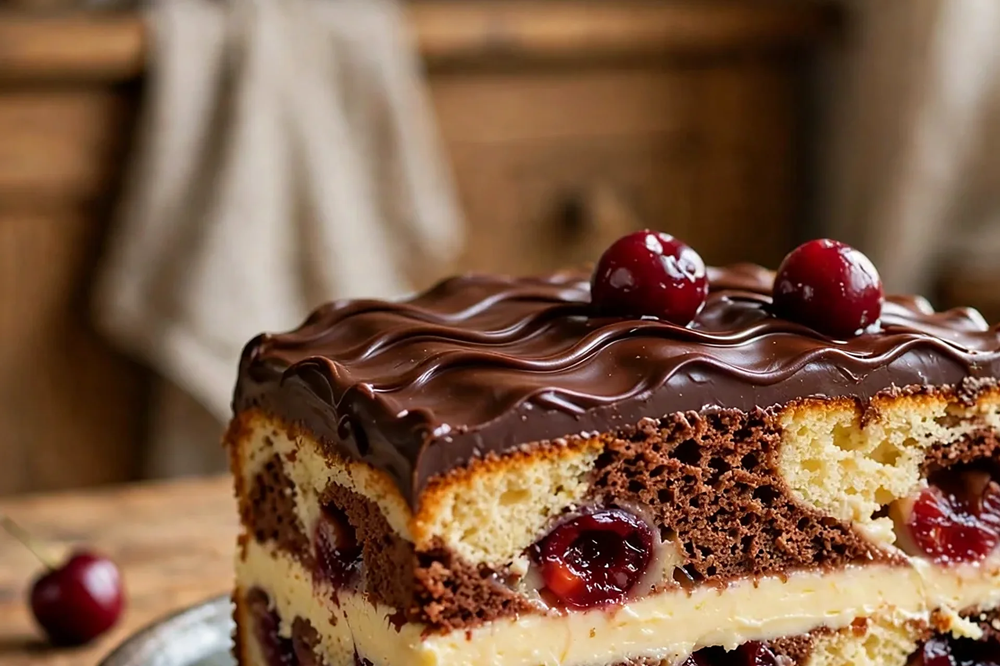

Donauwelle – der Klassiker mit Kirschen und Buttercreme
Heller Teig, dunkler Teig, dazwischen versunkene Kirschen – und obenauf Buttercreme und Schokolade mit dem berühmten Wellenmuster. Die Donauwelle sieht nach Konditorei aus, ist aber mit ein wenig Ruhe und Geduld auch zu Hause gut zu schaffen.

Inhaltsverzeichnis
Zutaten
Zubereitung
- Für die Creme zuerst den Pudding nach Packungsangabe mit 500 ml Milch und 3 EL Zucker kochen. In eine Schüssel füllen, die Oberfläche direkt mit Folie abdecken und auf Zimmertemperatur abkühlen lassen.
- Butter, Zucker und Vanillezucker hell und cremig schlagen. Die Eier einzeln unterrühren. Mehl, Backpulver und Salz mischen und kurz unterrühren.
- Zwei Drittel des Teiges auf ein mit Backpapier belegtes Blech (ca. 30 × 40 cm) streichen. Unter den restlichen Teig Kakao und Milch rühren und vorsichtig auf dem hellen Teig verteilen.
- Die abgetropften Kirschen gleichmäßig auf dem dunklen Teig verteilen und leicht andrücken – sie sinken beim Backen ein und bilden das Wellenmuster.
- Bei 180 °C Ober-/Unterhitze 20–25 Minuten backen. Stäbchenprobe machen und den Boden vollständig auskühlen lassen.
- Die weiche Butter hell und cremig schlagen. Den zimmerwarmen Pudding löffelweise unterrühren, bis eine glatte Buttercreme entsteht. Auf dem kalten Boden gleichmäßig verstreichen und 1 Stunde kalt stellen.
- Die Kuvertüre mit dem Öl über dem Wasserbad schmelzen und auf der festen Creme verteilen.
- Mit einer Gabel oder einem Tortenkamm wellenförmige Linien durch die noch weiche Glasur ziehen. Mindestens 1 weitere Stunde kalt stellen und zum Schneiden ein scharfes, warmes Messer verwenden.

Tipp
Pudding und Butter müssen für die Creme unbedingt gleich warm sein – also beides zimmerwarm –, sonst gerinnt die Buttercreme. Wird sie doch grisselig, kurz über dem warmen Wasserbad weiterschlagen.
📌 Mehr Rezept-Ideen findest du auf unserem Pinterest-Profil:
Lecker Rezepte auf Pinterest
Lecker Rezepte auf Pinterest